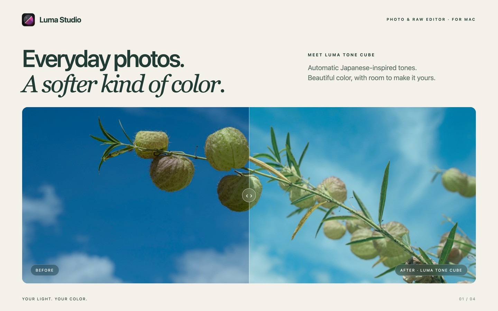
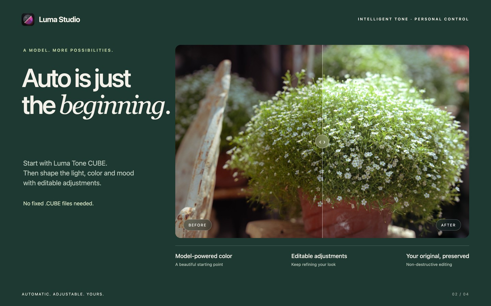
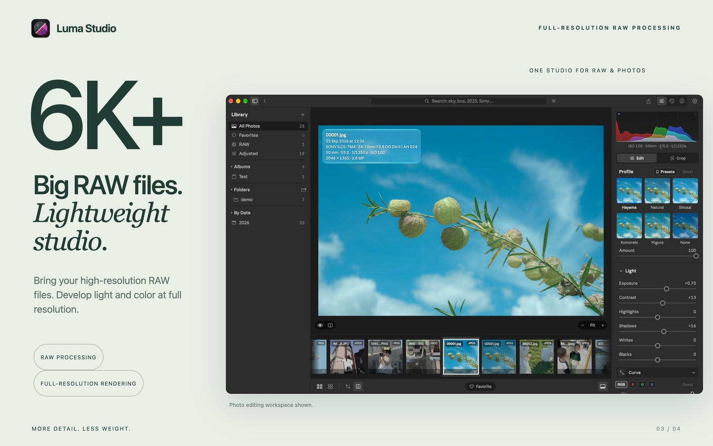
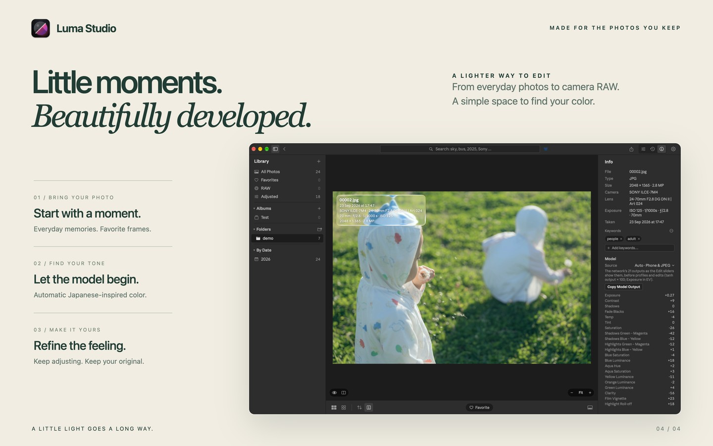

A model that gives you a starting point
Luma Tone CUBE creates soft, Japanese-inspired color automatically. Its output remains editable: refine exposure, contrast, color and other adjustments without relying on fixed .CUBE files.
Meet LumaStudio. Automatic Japanese-inspired tones, full-resolution RAW processing, and the freedom to keep adjusting.
Explore LumaStudioGet supportComing to the Mac App Store · macOS 26 or later · One-time purchase

Luma Tone CUBE creates soft, Japanese-inspired color automatically. Its output remains editable: refine exposure, contrast, color and other adjustments without relying on fixed .CUBE files.

Process 6K+ RAW files and render edits at full resolution. RAW support depends on the camera formats supported by macOS. JPEG, HEIC, PNG and TIFF photos also fit into the same workflow.

Photo processing and model inference run locally. Refine your look, compare before and after, organize your library, and export JPEG or PNG files. Your original remains preserved.
